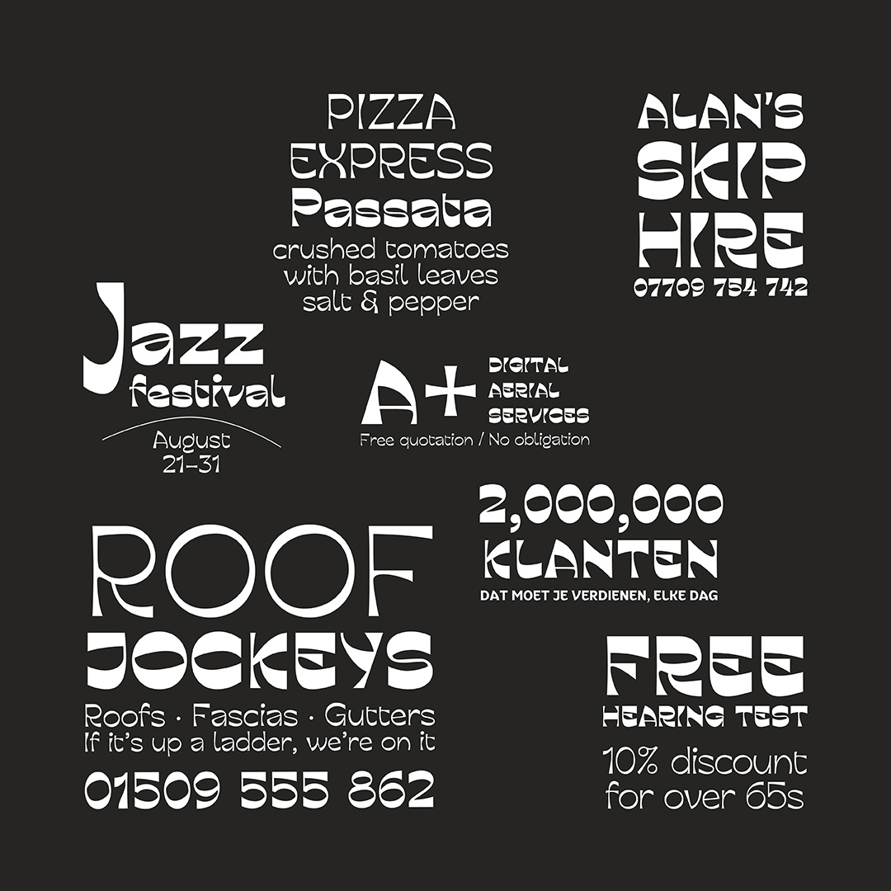
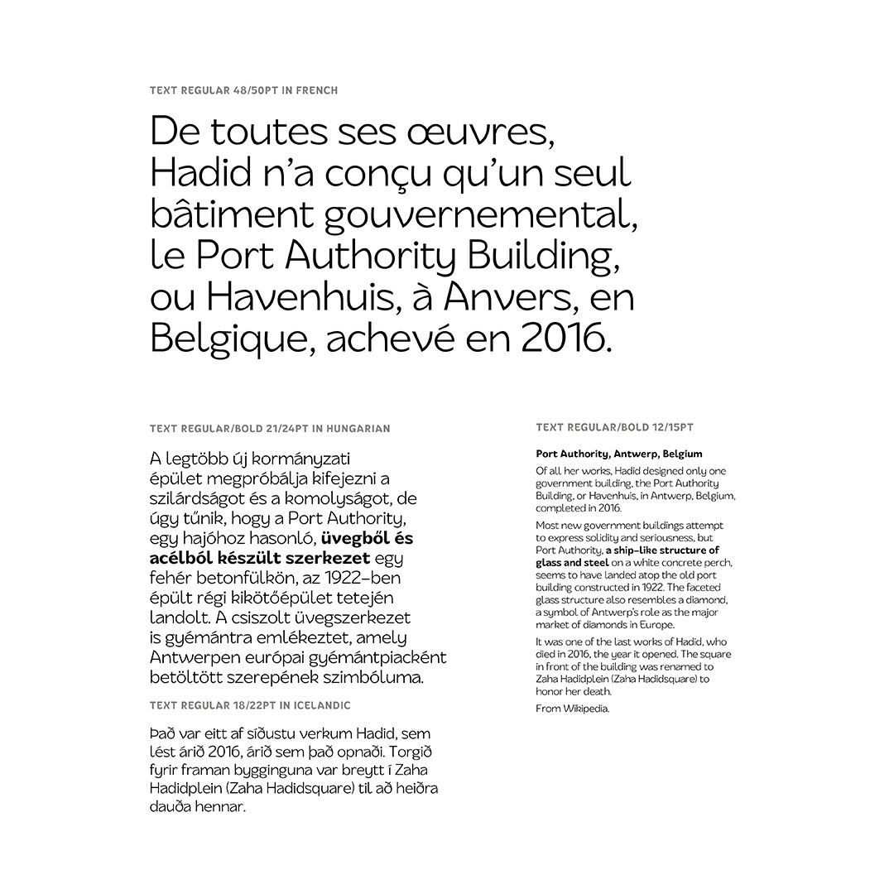
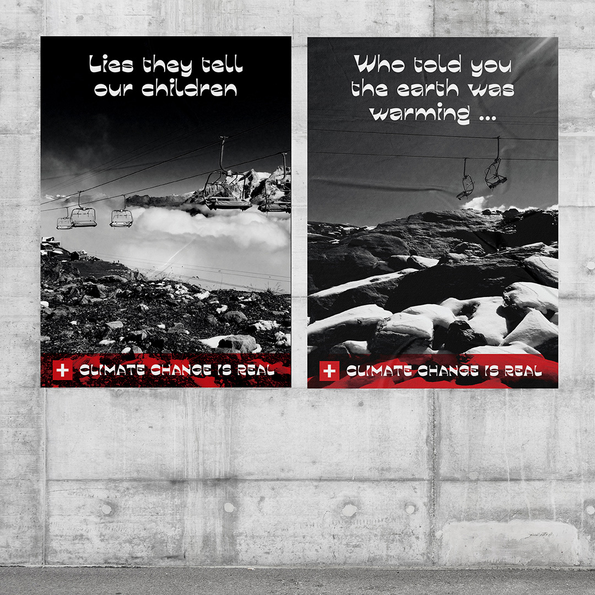
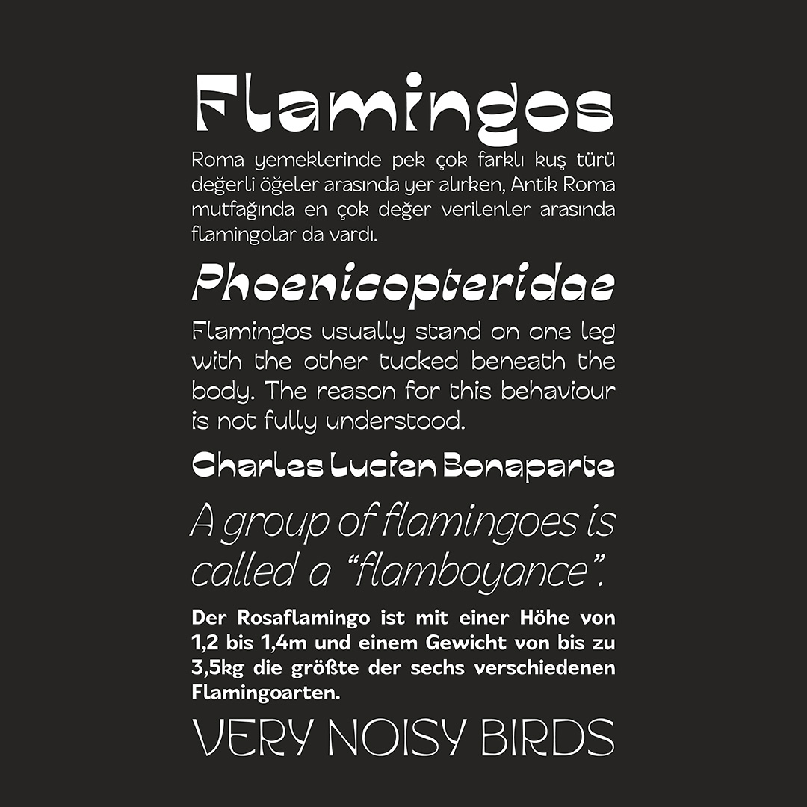
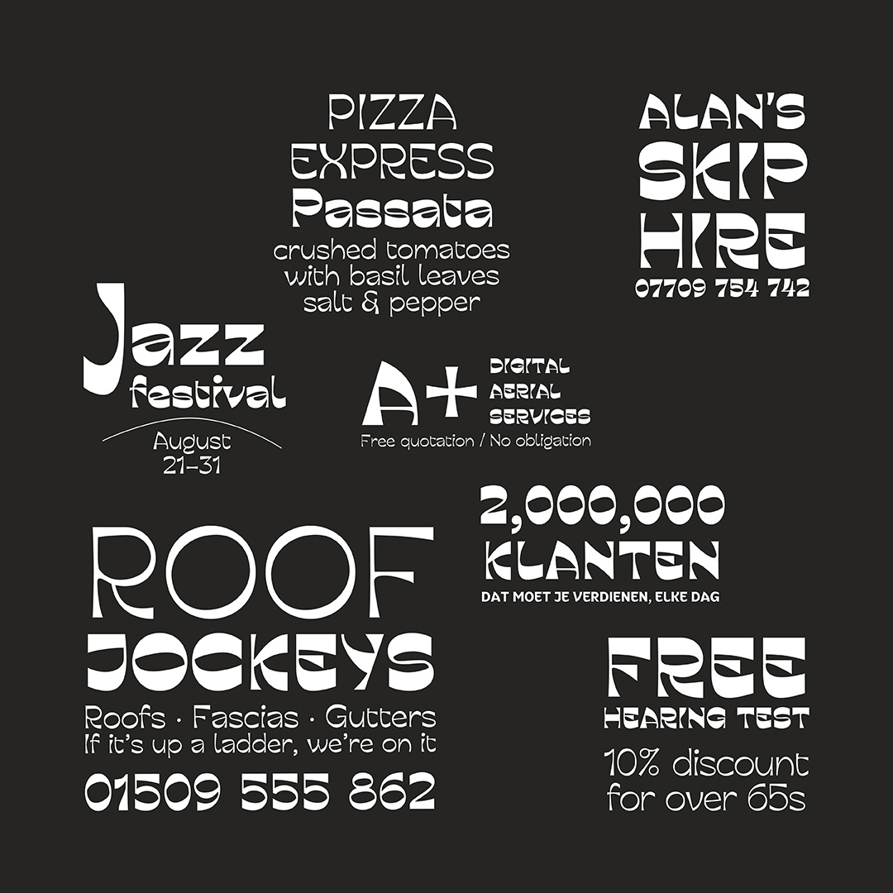
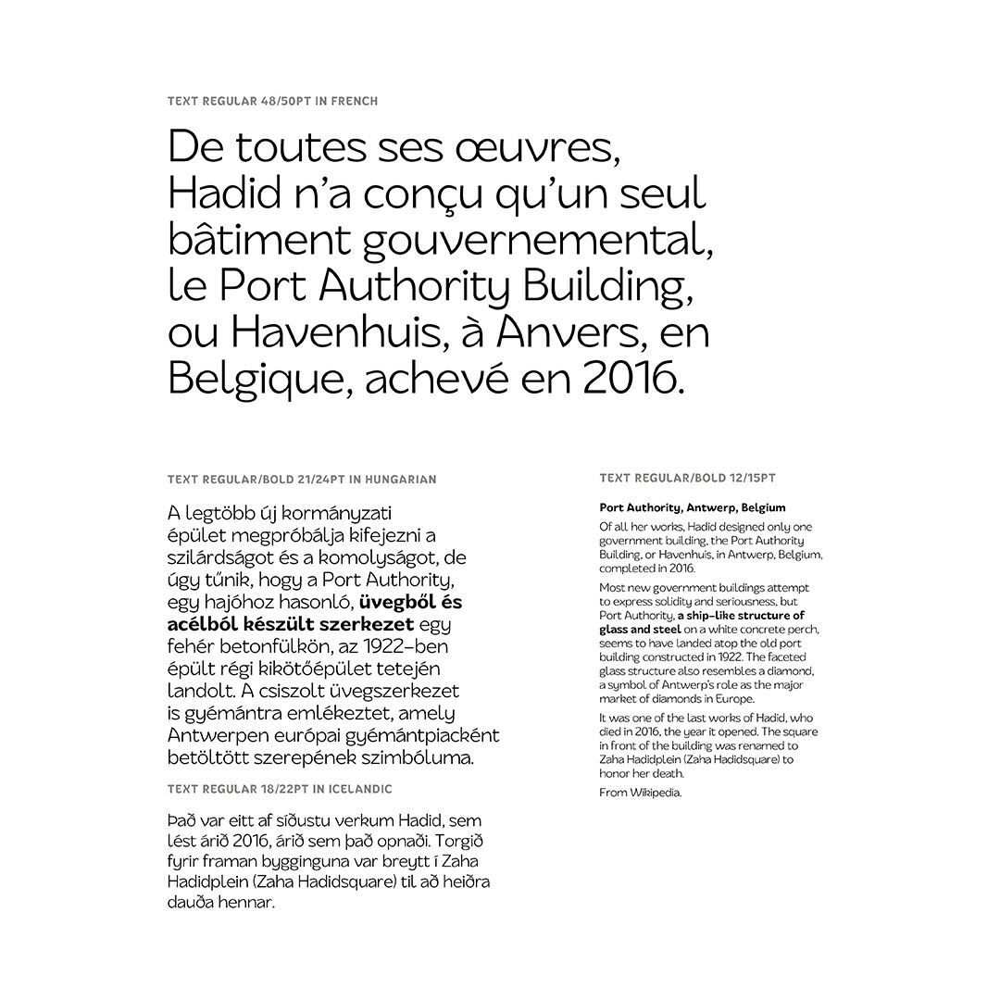
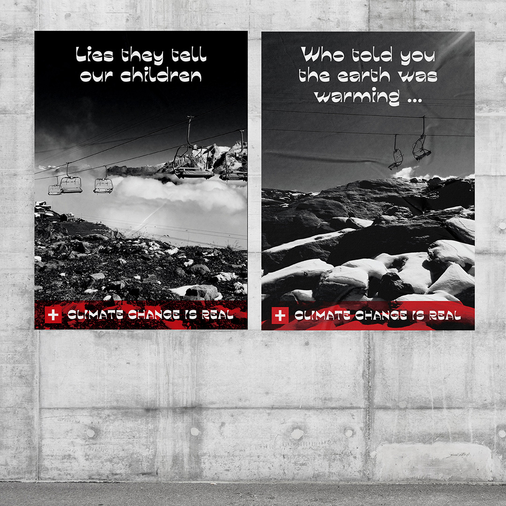
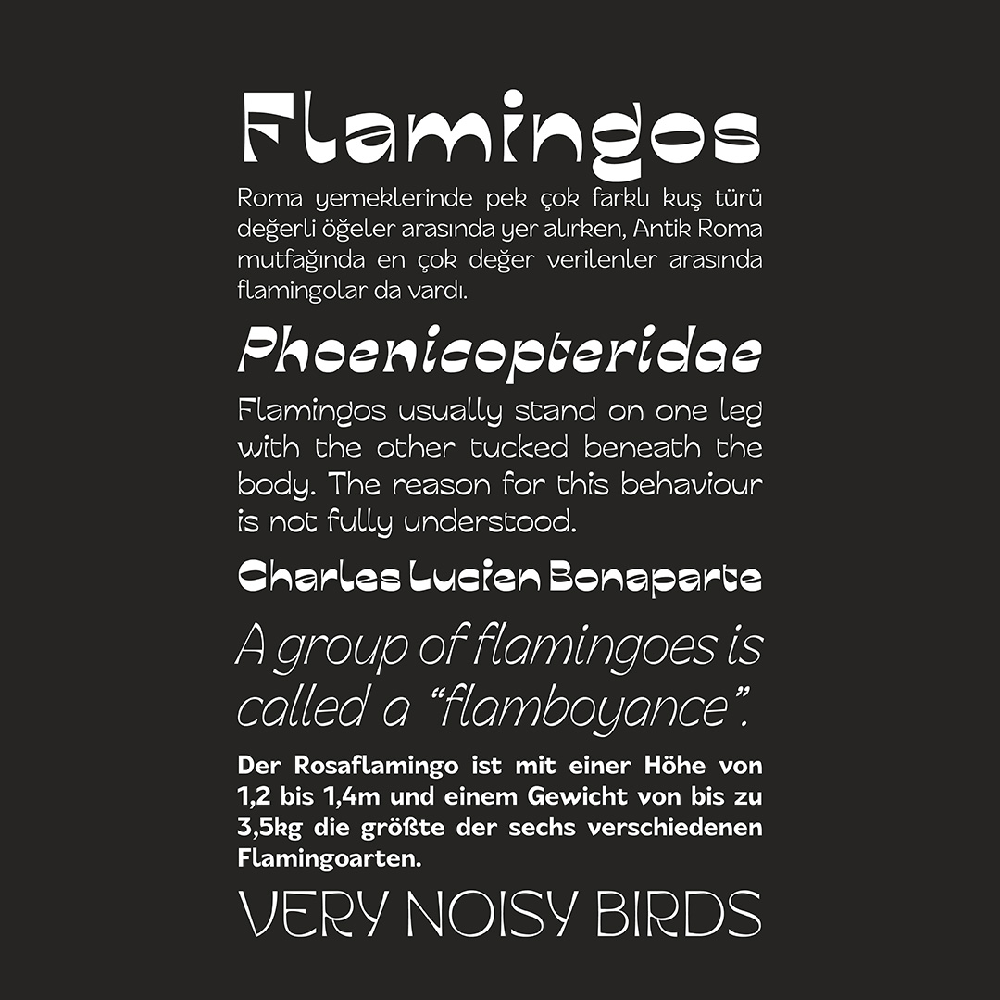

Display Black
Flamingos were among the most prized in Ancient Roman cuisine.
 







Verrückt is a sans serif type family inspired by modern architecture and abstract art. It consists of interpolating display styles, matching italics and several text styles.
The display styles are high contrast with quirky angles and curves. They work well for headlines, titles and small sections of standalone text. The text styles feature some of the quirkyness but are quieter and suited for long form text.
Verrückt contains punctuation, figures and symbols, supports several Latin script languages, and has a few stylistic alternates.
The inspiration for this typeface is the architecture of Zaha Hadid, who in turn was inspired by calligraphy, Malevich, Rodchenko & Tatlin. I began with the distinctive shape of the Heydar Aliyev centre in Baku for the letter n, the rest became an experiment to see how I could keep that idea going for the entire glyphset.
Flamingos were among the most prized in Ancient Roman cuisine.
Roma yemeklerinde pek çok farklı kuş türü değerli öğeler arasında yer alırken, Antik Roma mutfağında en çok değer verilenler arasında flamingolar da vardı.
A group of flamingoes is called a “flamboyance”.
Flamingos usually stand on one leg with the other tucked beneath the body. The reason for this behaviour is not fully understood.
Der Rosaflamingo ist mit einer Höhe von 1,2 bis 1,4m und einem Gewicht von bis zu 3,5kg die größte der sechs verschiedenen Flamingoarten.
Flamingos usually stand on one leg with the other tucked beneath the body
The reason for this behaviour is not fully understood. One theory is that standing on one leg allows the birds to conserve more body heat, given that they spend a significant amount of time wading in cold water. However, the behaviour also takes place in warm water and is also observed in birds that do not typically stand in water.
Flamingóar standa venjulega á öðrum fæti með hinni undir líkamanum
Ástæðan fyrir þessari hegðun er ekki að fullu skilin. Ein kenningin er sú að það að standa á öðrum fæti gerir fuglunum kleift að varðveita meiri líkamshita, í ljósi þess að þeir eyða umtalsverðum tíma í að vaða í köldu vatni. Hins vegar fer hegðunin einnig fram í heitu vatni og sést einnig hjá fuglum sem standa venjulega ekki í vatni.
A flamingók általában az egyik lábon állnak, a másikat pedig a testük alá húzzák
Ennek a viselkedésnek az oka nem teljesen érthető. Az egyik elmélet szerint az egyik lábon állva a madarak több testhőt takarítanak meg, mivel jelentős időt töltenek hideg vízben gázolással. A viselkedés azonban meleg vízben is megtörténik, és olyan madarakon is megfigyelhető, amelyek általában nem állnak vízben.
Quarrelsomeness
Communicatively
Excommunicator
Desynchronizing
Unscrupulously
Quadraphonically
Circumstantiation
Oversubscription
Complementary
Misdemeanants
Display Light, Display Regular, Display Medium, Display Bold, Display Black, Text Light, Text Regular, Text Medium, Text Bold, Text Black
otf, woff, woff2
Access All Alternates, Contextual Alternates, Case-Sensitive Forms, Standard Ligatures, Kerning, Stylistic Sets, Glyph Composition / Decomposition, Mark Positioning, Mark to Mark Positioning
Latin Extended A